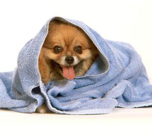

Купання собаки
Поширена думка, що купати собаку часто шкідливо. З однієї сторони це вірно: шкіра собак сухіша, ніж у людини, і при купанні стирається природне змащування. Однак брудна шерсть погано росте, вона погано "лежить по корпусі", швидко звалюється. Особливо часто купаються виставочні собаки (особливо породи, що вимагають ретельного догляду за шерстю: кокери, пуделі).
Найкраще використовувати для купання шампуні, призначені для собак. У наш час у продажі є великий вибір "собачих" шампунів для різного типу шерсті. Більшість із них гарні й для частого використання. Годяться також якісні людські шампуні (для сухого волосся).
Дуже зручно мити собаку у ванні; воду наливайте так, щоб вона закривала тільки кінцівки. Температура води - не вище 36°С (для руки - трохи прохолодна). Шампунь не наносіть відразу на шерсть, розбавте його теплою водою. Поставивши собаку у ванну, спочатку ґрунтовно змочіть всю шерсть, а потім виливайте розведений шампунь. Утріть шампунь в шерсть до утворення піни, ретельно помасажуйте ділянки тіла собаки. Потім гарненько промийте.
Після купання собаки шерсть відіжміть від води і протріть сухим рушником. Витираючи, не тріть шерсть рушником - якщо собака линяє, це підсилює випадання шерсті. Для прискорення процесу сушіння зручно користуватися феном (не гаряче повітря). Стежте, щоб собака був у теплі, а в кімнаті не було протягів.
Дуже маленьких щенят, так само як і старих собак і вагітних сук не слід купати у ванні із зануренням у воду: опірність організму в них низька і вони можуть легко простудитися.
Узимку можна чистити собаку сухим снігом. Зрозуміло, чистим, краще тільки тим, який щойно випав - він м'якший за старий. Сніг добре очищає шерсть, благотворно впливає на шкіру. Багато собак самі охоче качаються по снігу. Не треба їм заважати, стежте лише, щоб це був чистий сніг.